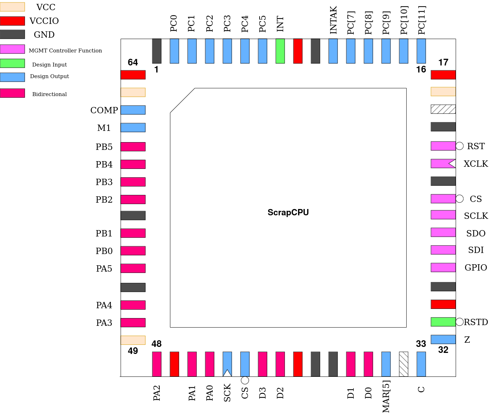

ScrapCPU
This design is a microcontroller with a 6-bit processor core. (It is a replica of the first CPU I ever designed, then out of discrete 74-series logic. ~Tholin). It is a harvard-architecture microcontroller that can address 64 words of RAM, which is entirely on-die, and 4096 words of ROM, which is implemented externally using a spiflash ROM.
For IO, there are three GPIO ports. Two bi-directional and one output-only.
Some pins output signals meant for debugging.
Pinout
Pin # |
Name |
Type |
Summary |
|---|---|---|---|
|
RSTD |
I |
Active low design reset |
|
Z |
O |
Zero flag state |
|
C |
O |
Carry flag state |
|
MAR[5] |
O |
State of MAR register bit 5 |
|
D[3:0] |
IO |
Spiflash data lines |
|
CS |
O |
Spiflash chip select |
|
SCK |
O |
Spiflash serial clock |
|
PA[5:0] |
IO |
GPIO Port A |
|
PB[5:0] |
IO |
GPIO Port B |
|
M1 |
O |
Pulses at start of each instruction fetch |
|
COMP |
O |
Indicates if CPU is running in compatibility mode |
|
PC[5:0] |
O |
Output-only GPIO Port C |
|
INT |
I |
Interrupt request |
|
INTAK |
O |
Interrupt acknowledge |
|
PC[11:7] |
O |
Mirror of Program Counter state, bits 11-7 |
Spiflash Interface
To access its program ROM, a interface to a 25Qxx spiflash is provided. As ScrapCPU opcodes are only 6 bits wide, the most significant two bits of each byte in the ROM are ignored during instruction fetches.
To verify compatibility of a specific spiflash part, check that this command sequence puts it into QSPI mode and starts a quad read:
FFh (ignore if part does not have this command)
ABh
06h 01h 02h 02h
EBh [now in quad mode] 00h 00h 00h 00h 00h 00h A5h
Programming Model
Registers
ScrapCPU contains only a few registers.
PC is the program counter and 12-bits wide. It points to the ROM address to fetch the next instruction from.
A is a 6-bit holding register and always used as the first operand in ALU instructions.
B is a 6-bit holding register where the result of ALU instructions is stored.
MAR is the Memory Address Register and points to the RAM address data will be stored or loaded from.
P buffers the most-significant 6 bits of the destination address for jump instructions.
There are also two ALU flags. These are not directly readable and only used during specific instructions.
Z is the Zero Flag and automatically generated after every ALU instruction. It is set if the result of the operation was equal to 0, cleared otherwise.
C is the Carry Flag and automatically generated after additions or subtractions, indicating a carry-out from the most-significant bit if set.
Subtraction is internally implemented by complementing the subtrahend and adding it plus either a constant 1 or the C flag depending on the instruction, resulting in the flag being normally set if there was no underflow.
Addressing Modes
Due to the limited amount of opcodes, every instruction which accesses RAM or requires an immediate only has two choices of addressing mode. The fundamental addressing modes which may appear are:
Immediate
The value is not stored in RAM, but follows the opcode word in ROM. A constant.
Absolute
The address to be used follows the opcode word in ROM. The MAR is loaded with this value before the instruction is executed.
Indirect
The MAR is not modified before the instruction is executed, using whichever address was already stored in the MAR.
More complex addressing modes can be constructed in software by combining these. For instance, indexed addressing can be accomplished by computing the desired address using ALU instructions and storing it memory using STB. This has the side effect of loading MAR with the address of this value, so LDM with indirect addressing can be used to copy it into the MAR for a subsequent use of indirect addressing.
Quick Mode
All ALU instructions support a “quick” mode which can be selected by setting the Q bit in its opcode. By default, these instructions will not only load B from the ALU output, but also copy that result back into A. If Q is set, only B will be loaded and A left unchanged.
It is named as it is as enabling Q would save one clock cycle on the instruction execution in the original implementation. Here, however, there is no speed difference.
In assembly language, this mode is selected by prefixing the instruction mnemonic with a lowercase ‘q’.
Original Instruction Set
LDA - Load A
This instruction loads the contents of the A register from a location in RAM.
If compatibility mode is disabled, the Z flag is set if the new value of A is equal to zero and cleared otherwise. If compatibility mode is enabled, this does not take place and Z is unchanged.
The available addressing modes are absolute (I == 0) or indirect (I == 1).
STA - Store A
This instruction stores the contents of the A register into a location in RAM. In the original implementation, this worked internally by computing an addition with zero, overwriting B as well, clearing C and setting Z if A equaled zero. Therefor, if compatibility mode is enabled, this instruction behaves identically.
If compatibility mode is disabled, only the store to RAM takes place and no registers or flags are modified.
The available addressing modes are absolute (I == 0) or indirect (I == 1).
STB - Store B
This instruction stores the contents of the B register into a location in RAM.
The available addressing modes are absolute (I == 0) or indirect (I == 1).
LDP - Load P
This instruction loads the contents of the P register in preparation for a jump.
The available addressing modes are immediate (I == 0) or indirect (I == 1).
LDM - Load MAR
This instruction loads the contents of the MAR register.
The available addressing modes are immediate (I == 0) or indirect (I == 1).
LDI - Load Immediate
This instruction copies the instruction argument following the opcode into the A register. It is always immediate-addressed.
ADD - Add
This instruction adds the contents of the A register to a value loaded from RAM, storing the result in B and setting both flags as defined.
The available addressing modes are absolute (I == 0) or indirect (I == 1).
ADC - Add with Carry
This instruction adds the contents of the A register plus the value of the C flag (either 1 or 0) to a value loaded from RAM, storing the result in B and setting both flags as defined.
The available addressing modes are absolute (I == 0) or indirect (I == 1).
SUB - Subtract
This instruction subtracts from the value of the A register a value loaded from RAM, storing the result in B and setting both flags as defined.
The available addressing modes are absolute (I == 0) or indirect (I == 1).
SBC - Subtract with Carry
This instruction subtracts from the value of A register a value loaded from RAM and adds the complemented value of the C flag (either 0 or 1), storing the result in B and setting both flags as defined.
The available addressing modes are absolute (I == 0) or indirect (I == 1).
EQL - Equality Comparison
This instruction compares the value of the A register with a value loaded from RAM and outputs, into B, either 01h if they are equal to each other and 00h otherwise. The Z flag is set as defined.
The available addressing modes are absolute (I == 0) or indirect (I == 1).
MAG - Magnitude Comparison
This instruction compares the value of the A register with a value loaded from RAM and outputs, into B, either 01h if A had the greater value and 00h otherwise. The Z flag is set as defined. The comparison is unsigned.
The available addressing modes are absolute (I == 0) or indirect (I == 1).
JMP - Jump unconditionally
This instruction combines the contents of the P register (MSBs) with an immediate or value from RAM (LSBs) to form a 12-bit address to load into PC, affecting a branch.
The available addressing modes are immediate (I == 0) or indirect (I == 1).
JZ - Jump if Zero
If the Z flag is set, this instruction combines the contents of the P register (MSBs) with an immediate or value from RAM (LSBs) to form a 12-bit address to load into PC, affecting a branch.
If the Z flag is clear, no jump takes place and execution continues from the instruction following this one.
The available addressing modes are immediate (I == 0) or indirect (I == 1).
JNZ - Jump if Not Zero
If the Z flag is clear, this instruction combines the contents of the P register (MSBs) with an immediate or value from RAM (LSBs) to form a 12-bit address to load into PC, affecting a branch.
If the Z flag is set, no jump takes place and execution continues from the instruction following this one.
The available addressing modes are immediate (I == 0) or indirect (I == 1).
Extended Instruction Set
ScrapCPU contains instructions not present in the original implementation, to enhance usability.
XOR - Logic Exclusive-OR
This instruction computes a bitwise Exclusive-OR between the value of the A register and a value from RAM, storing the result in B and setting the Z flag as defined.
The available addressing modes are absolute (I == 0) or indirect (I == 1).
AND - Logic AND
This instruction computes a bitwise AND between the value of the A register and a value from RAM, storing the result in B and setting the Z flag as defined.
The available addressing modes are absolute (I == 0) or indirect (I == 1).
RSH - Right Shift
This instruction right-shifts the binary value of A by one place and stores the result in B, never modifying A. The most-significant bit of the result always becomes zero and the C flag is loaded with the previous least-significant bit of A’s value. The Z flag is set as defined.
RSHC - Right Shift with Carry
This instruction right-shifts the binary value of A by one place and stores the result in B, never modifying A. The most-significant bit of the result is loaded from the C flag and the C flag is loaded with the previous least-significant bit of A’s value. The Z flag is set as defined.
JC - Jump if Carry
If the C flag is set, this instruction combines the contents of the P register (MSBs) with an immediate or value from RAM (LSBs) to form a 12-bit address to load into PC, affecting a branch.
If the C flag is clear, no jump takes place and execution continues from the instruction following this one.
The available addressing modes are immediate (I == 0) or indirect (I == 1).
SEC - Set Carry
This instruction always sets the C flag to a one.
CLC - Clear Carry
This instruction always clears the C flag to a zero.
IRET - Return from Interrupt
This instruction executes an interrupt return. See Interrupt.
TC - Toggle Compatibility
This instruction toggles compatibility mode. See Compatibility Mode.
Compatibility Mode
After reset, ScrapCPU starts up in compatibility mode, where its behavior is more in-line with that of the original implementation. This does not disable the use of the new instructions, as this mode controls the behavior of instructions from the original instruction set.
The TC instruction can be used to exit or re-enter compatibility mode. Every execution of this instruction toggles the compatibility mode from on to off or off to on. The COMP pin on the package indicates to external hardware if the processor is in compatibility mode or not.
Compatibility mode affects the following instructions in ways described in their own sections:
Incompatibilities
Due to some oversights, there are differences between ScrapCPU and the original implementation. These are:
MAGandEQLpreserve theCflag. Originally, theCflag would be overwritten with the carry-out of an invisible addition of the two involved values.
IO Ports
The three IO ports are implemented using four memory-mapped special registers. Only ports PA and PB are bi-directional. Port PC is output-only. The following addresses are used:
3Bh maps to the PDIR register, which determines the directions of the PA and PB lines. Every bit in PDIR determines the direction of two port lines, where a 0 equals an input and a 1 equals an output:
Bit |
Port lines affected |
|---|---|
|
|
|
|
|
|
|
|
|
|
|
|
3Fh maps to the PA port lines. When written, the states of pins configured as outputs is set. When read, the states of the pins configured as inputs is returned, mixed with the current states of the pins configured as outputs.
3Ch maps to the PB port lines and behaves similarly to the above address.
3Ah maps to the PC port lines. As these are always outputs, they will always simply mirror the contents of this address. Reading from this address returns the current states of the outputs.
Addresses 3Dh and 3Eh map to regular RAM, but are conventionally used in assembler macros to store a return address during subroutine calls and should not be used otherwise.
Interrupt
ScrapCPU features a single interrupt input at the INT pin which triggers on a rising edge and is not maskable. When triggered, the CPU completes executing the current instruction and jumps to the constant ROM address 004h after backing up all CPU registers to hidden internal registers.
The INTAK pin immediately goes high after this and remains in this state until the execution of an interrupt return.
The IRET instruction is used to return from the interrupt, which will restore all CPU registers from their backups, including the Program Counter, resuming execution from before the interrupt. INTAK goes low at the completion of this instruction.